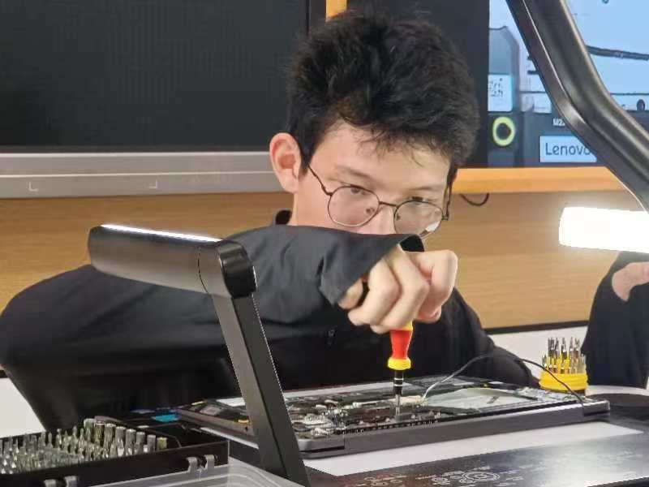

Zhuhan Bao
Visiting Scholar @ Duke-NUS Medical School

My name is Zhuhan Bao (鲍竹涵). I am currently a Visiting Scholar at Duke-NUS Medical School, Singapore, working with Prof. Nan Liu. I also serve as a Researcher on the Benchmark Research Team at TouchStone AI.
News
- Visiting Scholar at Duke-NUS Medical School, Singapore, advised by Prof. Nan Liu.
- Second Prize at 2026 ASC Student Supercomputer Challenge.
- Second Prize at the East China Regional Final of the Service Outsourcing Innovation Competition.
- Excellent Award, 1st National Service Computing Innovation Competition.
- Visiting Student at Duke University, advised by Prof. Chuan Hong.
- Second Prize at 2025 ASC Student Supercomputer Challenge.
- Visiting Student at Zhejiang University NESA Lab, advised by Dr. Peiyu Liu.
Research
Medical AI research on multilingual clinical dataset generation and multimodal diagnostic reasoning evaluation.
Clinical dialogue simulation, medical AI agents, and synthetic healthcare data generation. Leading LLM-based simulation frameworks for behaviorally grounded doctor–patient interaction modeling. Maintaining DCC computing cluster and H200 GPU benchmarking for large-scale AI research.
Industry Experience
Focused on computer-use agents. Touchstone delivers high-quality training data and real-world benchmarks for teams building and evaluating AI systems. Explore research
Publications
* Equal contribution · † Corresponding author
Education
Projects
Cross-platform benchmarking for computer-use agents. Contributed 70 tasks based on open-source Linux software and reviewed OpenAPP benchmark tasks. Set up and tested LivingBench environments on Android, macOS, iOS, and Windows, and completed the Android experiment suite.
Built a Triton fused sampler for vLLM on Ascend 910B, combining top-k/top-p sampling, softmax, and repetition penalties for 128K vocabularies. Increased Llama-3-8B inference throughput at TP=8 from 113.64 to 395.75 tokens/s.
Teaching
Designed assignments, led problem-solving on MPI, OpenMP, and parallel algorithms.
Leadership
Leading the HPC team in competitions (ASC, IndySCC). Training on Slurm, parallel programming, and cluster operations.
Organized free equipment maintenance, solving 500+ problems at 98% satisfaction. Expanded service coverage and trained 25 new members.
Honors & Awards
- Second Prize East China Regional Final of the Service Outsourcing Innovation Competition
- Second Prize 2026 ASC Student Supercomputer Challenge
- Excellent Award 1st National Service Computing Innovation Competition
- Second Prize 2025 ASC Student Supercomputer Challenge